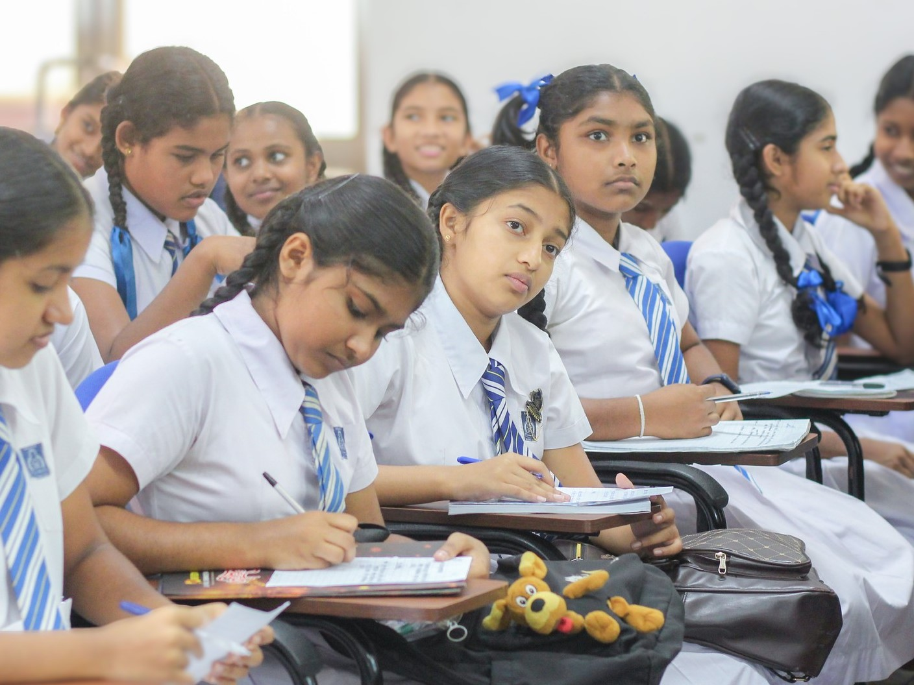

Tall Tower Challenge Workshop
Our primary goal was to introduce students to the field of Architectural Engineering and help them discover how creativity and problem-solving come together to shape the spaces we live, work, and play in.
The session began with a brief introduction to what architectural engineers do—from designing safe, efficient, and sustainable buildings to integrating systems like lighting, ventilation, and structure. Students learned how this discipline blends engineering precision with architectural creativity, emphasizing both design and functionality.
The hands-on activity for the day was the Tall Tower Challenge, where students worked in teams to design and construct the tallest possible tower using limited materials such as straws, paper clips, and pipe cleaners. The tower had to support the weight of a tennis ball for two minutes, challenging teams to think critically about structure, stability, and material strength.
Through this challenge, students were guided through the engineering design process—brainstorming, sketching ideas, prototyping, testing, and improving their designs. They learned the importance of teamwork, iterative problem-solving, and productive failure, understanding that testing and redesigning are essential parts of real-world engineering.
In addition to the activity, we discussed career pathways in Architectural Engineering, highlighting how professionals contribute to sustainable design, urban development, and innovation in modern construction. Students were also inspired by stories of famous engineers like Gustave Eiffel and Julia Morgan, who revolutionized the way we think about structural design.
Overall, the session was not just about building towers, but about building curiosity and confidence. It encouraged students to see engineering as a creative and impactful field—one where they can shape a better, more sustainable future through design and innovation.
